Following are the steps to use it from a Windows 7 machine. (Hopefully the experience is a little less of a headache in more modern operating systems!)
If your operating system does not already have a driver for the Canon MF229dw, then navigate to the Canon MF229dw printer driver download page, click Drivers and Downloads and then select the "MFDrivers" file and download it and run it. Windows will want to confirm your desire to do this:
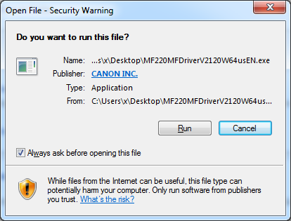
Click Run and the Canon installer will appear:
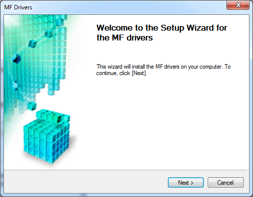
Agree to the license:
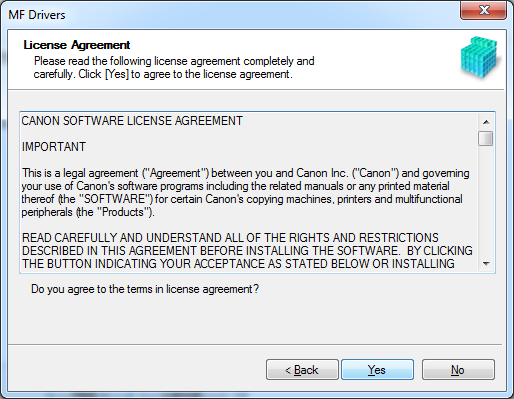
Relax the firewall in order to let the driver installer find the printer on the network:
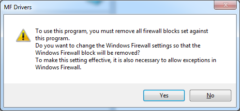
You will be using a network connection to talk to this printer:
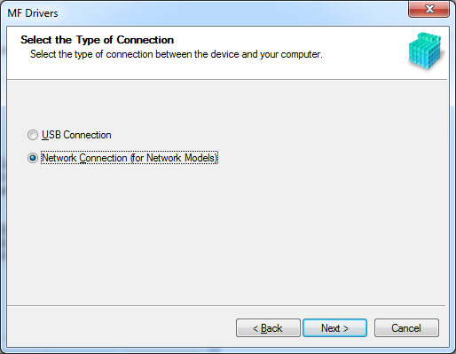
Wait a few seconds for the printer to be found:
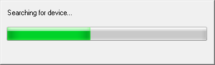
You have found it:
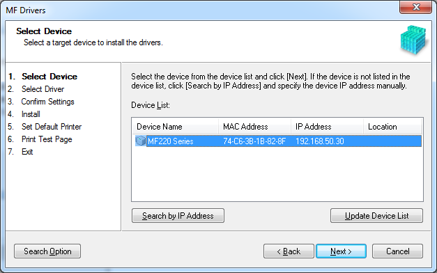
Choose the appropriate drivers -- there is no landline connection, so the fax driver is not useful:
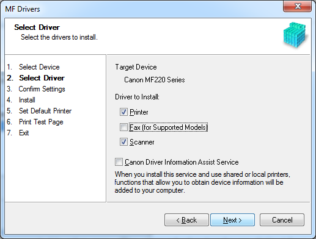
Choose the printer drivers:
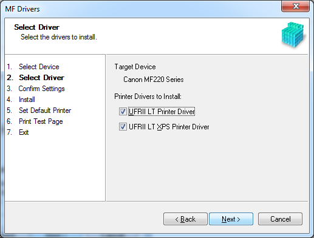
Choose the XPS driver (which I understand is a slightly higher quality printer driver not supported by all applications):
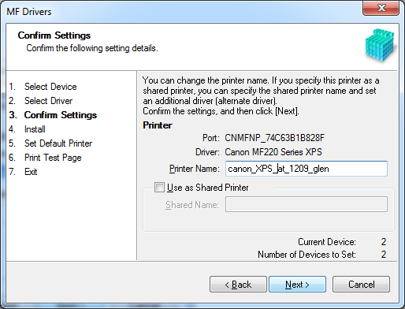
Confirm that you really want to do this. Whoever implemented this interface must have been paid by the screen...
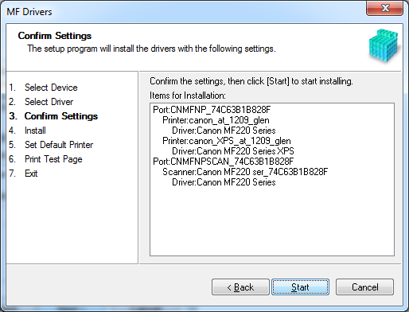
Wait a minute for the installation finish.
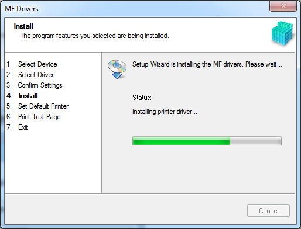
And welcome to the world of printing in glorious black and white.